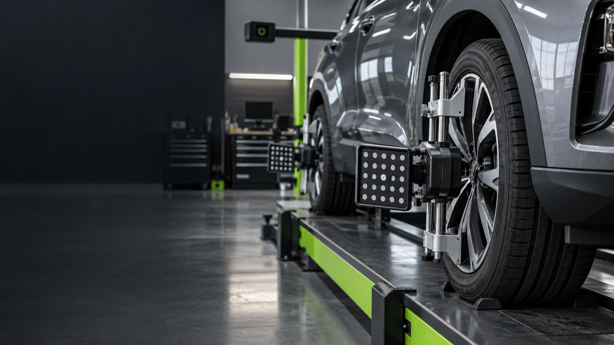

How it tracks on a straight road
Say whether the vehicle consistently drifts or pulls left or right.
Wheel alignment in Bowling Green, OH
Pulling, an off-center steering wheel, or unusual tire wear can be signs that the vehicle deserves a closer look.

When the car will not track like it used to
Pulling, an off-center steering wheel, or uneven tire wear can show up gradually or after an impact. Tell J&T what direction the car wants to go and what changed beforehand.
Useful clues
Say whether the vehicle consistently drifts or pulls left or right.
An off-center wheel while traveling straight is useful context.
Uneven wear—and whether the change followed a pothole, curb, or suspension work—helps complete the picture.
Wheel Alignment FAQ
Consistent pulling, an off-center steering wheel, unusual tire wear, or handling that changed after an impact are all worth mentioning.
A hard impact can change how a vehicle tracks. If steering or handling changed after a pothole or curb impact, mention that when you request service.
Have the vehicle year, make and model ready and mention which way it pulls, steering-wheel position, tire wear, and any recent pothole or curb impact.
Wheel alignment
Tell J&T how the vehicle tracks, steers or wears its tires and start there.